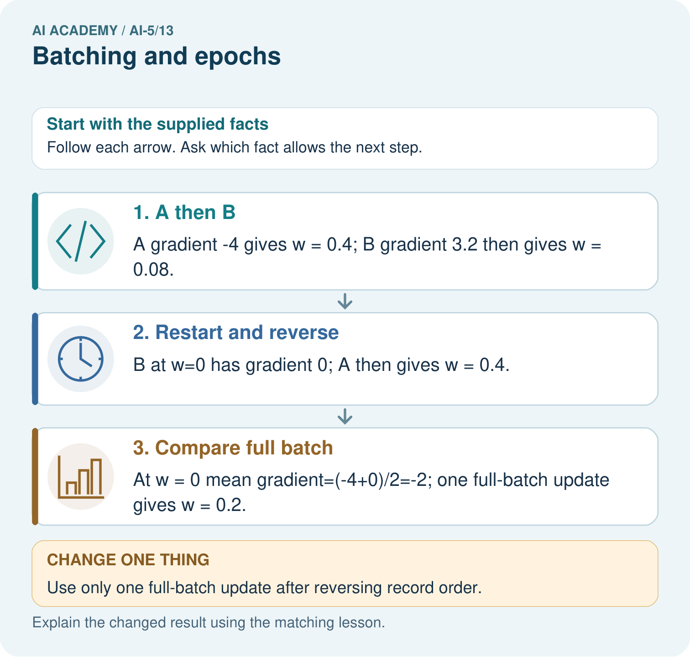

AI Academy · Level 5 · Grade 10 · Week 13 · Workbook
Batching and epochs
Learn to understand, design, build, test and explain AI systems responsibly.
Project: Image-pattern Network Investigation
Workbook · 1 of 13
Recall and choose your starting point
Try the recall before opening notes. Then use a different colour or a labelled second line to correct your explanation.
Training a small network
Without opening the old lesson, explain one key idea from Training a small network. Give an example and a mistake that the idea helps you avoid.
Gradients with a numerical check
Without opening the old lesson, explain one key idea from Gradients with a numerical check. Give an example and a mistake that the idea helps you avoid.
Parameters and architecture
Without opening the old lesson, explain one key idea from Parameters and architecture. Give an example and a mistake that the idea helps you avoid.
Workbook · 2 of 13
Practise with fading help
Use W2: Repair a stale gradient for Batching and epochs. Record the answer once; the lesson and workbook refer to the same attempt.
| Given inputs | Procedure I chose | Middle steps | Result and check |
|---|---|---|---|
Workbook · 3 of 13
Individual reasoning check
Use the worked case for Batching and epochs. Proposed explanation: “One epoch always means one update”. Decide whether this explanation is supported. Point to the step or supplied fact that decides; explain your repair if needed.
Workbook · 4 of 13
Independent transfer case
Independent case: Test order on a new case independently
Use A = (1, 1), B = (2, 0), h = ReLU(x), y = vh, v = 0 and rate 0.1. Train with size 1 for one epoch in A then B order, then restart at 0 and reverse the order. Show gradients and parameter values. Compare the final values.
Attempt this case before feedback. Record any help. Earlier examples below are further practice; a case already practised with feedback cannot establish fresh transfer.
Workbook · 5 of 13
W1 Count a partial batch
For 10 rows, batch size 4 and three epochs, retaining the final batch, list batch lengths and count total updates and example visits.
Workbook · 6 of 13
W2 Repair a stale gradient
For A then B separately in the lesson, a learner computes both gradients at v = 0, then applies them to get v = 2. Explain the error and give the correct final value.
Workbook · 7 of 13
W3 Combine unequal batches
At one frozen model, batches of sizes 3 and 1 have mean squared errors 2 and 10. Find the full MSE and explain why the average of 2 and 10 is wrong.
Workbook · 8 of 13
W4 Test order on a new case independently
Use A = (1, 1), B = (2, 0), h = ReLU(x), y = vh, v = 0 and rate 0.1. Train with size 1 for one epoch in A then B order, then restart at 0 and reverse the order. Show gradients and parameter values. Compare the final values.
Workbook · 9 of 13
W5 Audit an epoch claim
A program processes 11 rows using size 4 and drops the last incomplete batch. How many examples did it visit and how many updates occurred? What must its report disclose?
Workbook · 10 of 13
Project checkpoint and reflection
Add a labelled batching and epochs evidence sheet to Image-pattern Network Investigation. Show how you can distinguish an example a batch an update and an epoch. Use the supplied fictional case and keep its inputs, intermediate steps, calculation or prediction, and limitation. Connect this record to last week’s record; a matching answer without a trace is insufficient.
Workbook · 11 of 13
Feedback, return check and learning record
| Evidence | My record |
|---|---|
| Worked alone / hint / model | |
| First step I repaired and why | |
| New case checked later; date and result | |
| What I can now explain without notes | |
| One remaining question |
Revisit this idea with your teacher after a delay. Familiarity is different from explaining and using it on a changed case.
Workbook · 12 of 13
Pictorial case practice: Batching and epochs
Show why an epoch’s example order can matter for single-example updates.
Toy y=wx, rate 0.1, squared loss, start w = 0. Training A=(x = 1, target 2), B=(x = 2, target 0).
All inputs and outcomes in this worked example are invented classroom data; no real model run is claimed.

Why do the single-example orders finish at different weights? Point to the relevant step in the picture, then write the changed result and the rule or evidence that supports it.
Support used: alone / hint / worked example. This record is practice evidence.
Project connection: For your Image-pattern Network Investigation, save the input, procedure, observed result and limitation of this check. Label this worked example as practice; use a different, previously unreviewed case when checking independent understanding.
Workbook · 13 of 13
Project portfolio milestone
Project: Image-pattern Network Investigation
Current milestone: Test changed cases. Keep normal, boundary and failure cases; compare expected and observed results.
For your Image-pattern Network Investigation, save the input, procedure, observed result and limitation of this check. Label this worked example as practice; use a different, previously unreviewed case when checking independent understanding.
| Evidence to keep | My record |
|---|---|
| This week’s input and deciding step | |
| Prediction and actual result (or labelled paper trace) | |
| One change since the previous checkpoint and why | |
| One error or limit and the next test |